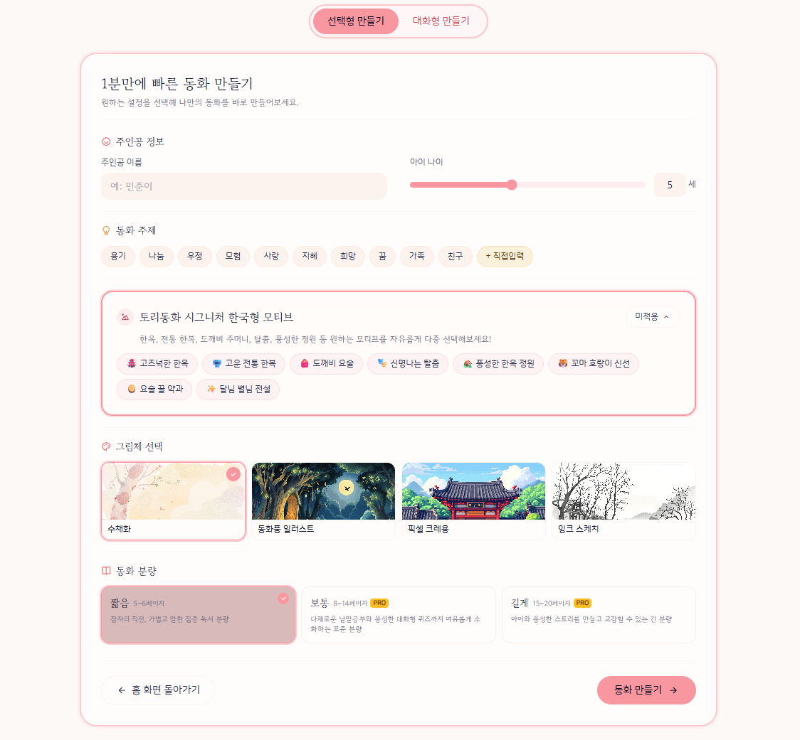
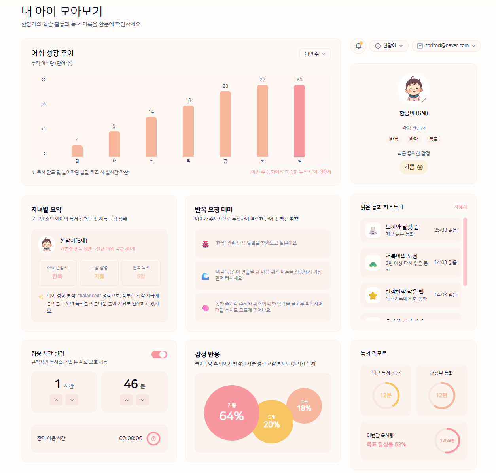
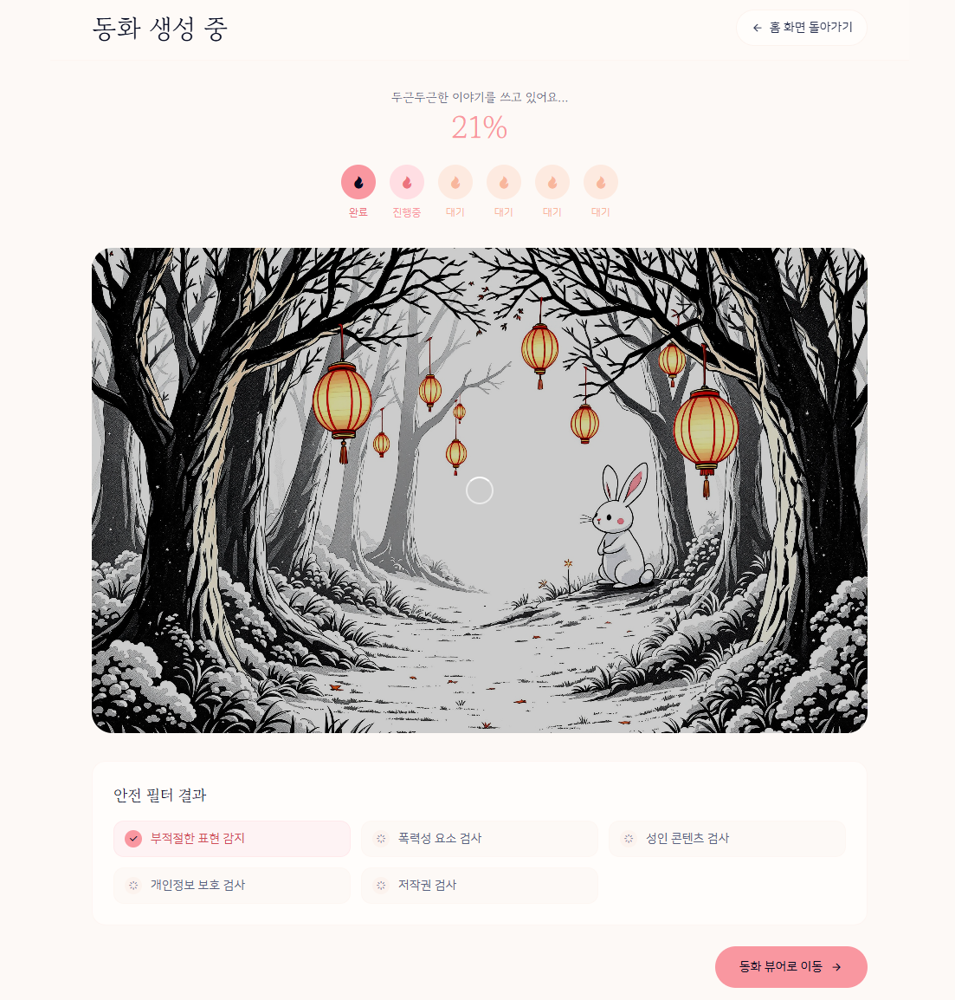
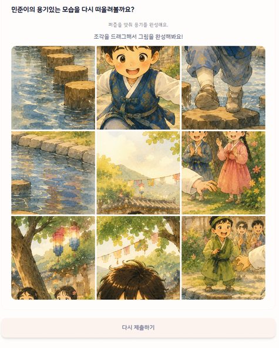

Frontend
React + Vite
태블릿 우선 설계로 반응형을 적용해 아이와 부모 모두 편하게 사용합니다.
01Project Overview
토리동화는 2~9세 자녀를 둔 부모를 위한 AI 맞춤 동화 제작 서비스입니다. 동화 생성 후, 독후활동과 독서 기록까지 하나의 경험으로 이어지도록 설계했습니다.



09Service Concept
아이의 정보와 관심사를 바탕으로 이야기를 만들고,
감상과 독후활동, 부모의 기록까지 하나의 독서 경험으로 연결했습니다.
Core Experience
01
Input
이름 · 나이 · 주제 · 한국 소재 등
이야기에 필요한 정보를 선택합니다.
02
Create

입력한 정보를 바탕으로
이야기와 삽화를 생성합니다.
03
Read
완성된 동화를 읽거나 들으며
이야기에 몰입합니다.
04
Activity

읽은 이야기를 바탕으로 생각하고
표현하는 독후활동을 이어갑니다.
05
Record
읽은 동화와 활동 기록을
부모 Dashboard에서 확인합니다.
From input to record